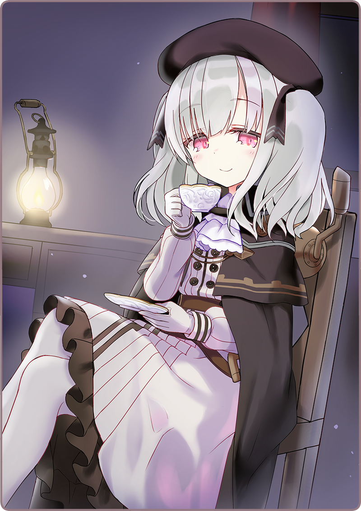

宇佐美「ややや、やめてくださいっ……ボクはっ……」
宇佐美「黒猫亭の厨房係なんです！ おいしいケーキが出来たから持ってきただけでっ……他意は、他意はないんですっ……！」
宇佐美「……あれ？」
必死になって弁明する。
しばし沈黙があったかと思うと、背中の殺意は消えていた。
宇佐美「どこに……」
再び、煙のように無くなってしまった。
宇佐美「ひっ」
と思ったら、部屋の隅にちゃっかりいた。
手にはパウンドケーキの乗ったお皿を持っており、器用にナイフで刺して口に運んでいる。
宇佐美「ぼ、ボクは宇佐美です！ あの、あなたは……？」
灰桜よりずいぶん大人びた表情で、悪戯な笑顔を見せる。ぽっと煙突から、甘い香りの蒸気が噴き出していた。
＊ ＊ ＊

灰桜を気遣って、ボクの部屋に移動する。
銀髪の人形は、すらりとした足を組んで椅子に腰かけていた。
優雅に紅茶まで飲んでいる。ボクが用意したものだけど。
宇佐美「もう、三ヶ月になるでしょうか。ようやく慣れてきました」
じろりと真紅の視線を向けられる。
宇佐美「ちょっかいって……」
宇佐美「し、してません！」
宇佐美「まあ、灰桜は可愛いですけど」
宇佐美「そう言う意味ではなくてですね……！」
感情的なレーツェルさんに、なんとか言葉を尽くして説明する。
宇佐美「それにしても……レーツェルさんと灰桜は、どういう関係なんですか？」
ボクは、以前から抱いていた疑問を口にする。
レーツェルさんは一瞬懐かしそうに目を細めて、思い出を語り始めた。
宇佐美「捨て子？」
宇佐美「それは……聞きました。ローベリアで作られたとか。その、捕虜になったとか……そういうのですか？」
宇佐美「失敗作……」
宇佐美「実験用の人形だったってことですか」
しくしくと、大げさに哀しそうな仕草をする。半分おどけているけれど。
宇佐美「勝手に？」
宇佐美「ローベリアに里帰りしていたんですよね」
宇佐美「なるほど、なるほど。事情は飲み込めました」
冷たいナイフを突きつけられたときは何が起こったのかと思ったけれど。
彼女なりに、そうする動機と想いがしっかりあるみたいだ。
宇佐美「だったら、今日は一泊していきますか」
宇佐美「灰桜が目覚めたら会いたいでしょう。他の皆さんにも……」
宇佐美「え？」
宇佐美「じゃあ、明日改めて？」
宇佐美「レーツェルさん？」
くるりときびすを返すと、窓を開け放つ。
そして出会った時と同じように、猫のようなしなやかさで、物音一つ立てずに部屋を出て行った。
宇佐美「……なにも、窓から出入りしなくていいのに」
＊ ＊ ＊
灰桜『うささん、うささん、大変ですっ！』
翌朝の黒猫亭。
自分の部屋で仕度を整えていると、どんどんとドアをノックする音が響いた。
宇佐美「どうしたの、灰桜？」
調理服の襟を止めると、出迎える。
そこには小さな姿で、ぴょんぴょん跳ね回っている姿がある。
灰桜「これをご覧ください！」
その手には真っ白なお皿。
宇佐美「お皿だね」
灰桜「お皿です！ いえ、いまはお皿なのですが～！」
ほっぺたにケーキくずを付けたまま熱弁している。
灰桜「わたしが目覚めると、枕元にパウンドケーキがおいてあったのです！ 黒豆入りでもっちりふわふわで、とってもおいしくてですね……！」
宇佐美「もう食べちゃったわけだ」
灰桜「そうなのです！ あの、うささんの所にもおいてありましたか？」
宇佐美「置いてはないけど、でもおいしく味わったよ。喜んでくれてよかった」
灰桜「みゅ？」
＊ ＊ ＊
灰桜「パウンドケーキ、うささんが作られたんですね」
二人で厨房にやってくる。
灰桜はお皿を丁寧に拭きながら、合点した表情を浮かべている。
宇佐美「そういうこと。おいしく出来たから持っていったんだけど、寝てたからさ」
灰桜「すみません、お相手出来なくて……」
宇佐美「いいんだよ、面白い出会いもあったし」
灰桜「出会い？」
宇佐美「実はさ、レーツェルに会ったんだ」
灰桜「レーツェルさん……」
その言葉を聞いて、一瞬考え込んで、小首を傾げる。
宇佐美「最初は怖かったけれど、ちゃんと話すと分かってくれる人だったよ。パウンドケーキも食べてもらったんだ。おいしいって言ってくれたし、それに……」
灰桜「なるほど、なるほど」
ボクの語る言葉を、灰桜はニコニコと聞いている。
灰桜「レーツェルさんはうささんのお友達ですか？」
宇佐美「え？」
灰桜「あ、違いましたか。では、お仕事仲間とか……」
宇佐美「いやいや、そうじゃなくて……レーツェルだよ。憶えてない？」
灰桜「みゅみゅみゅ、どこかでお会いしたことがあるのでしょうか……申し訳ありません、物覚えが良くなくて～……」
恐縮した様子で、困った顔をしている。
鴉羽「灰桜、フロアを手伝ってくれる？」
灰桜「はい、りょーかいしました！」
鴉羽に呼ばれて、厨房を出て行く。
鴉羽「うささん、パウンドケーキおいしかったわ。あれならお店に出しても………うささん？」
ボクは灰桜の一言に、固まったままだった。
怪訝そうな瞳を向けてくる。
宇佐美「……あの、鴉羽さん」
鴉羽「どうしたの？」
不思議そうにしている鴉羽さんに、ボクは思い切って尋ねてみる。
宇佐美「レーツェルさんと連絡って……取れますか？」

 「お姉様がいくら可愛いからといって、寝込みを襲うとは……八つ裂きにしても飽き足りませんわ」
「お姉様がいくら可愛いからといって、寝込みを襲うとは……八つ裂きにしても飽き足りませんわ」